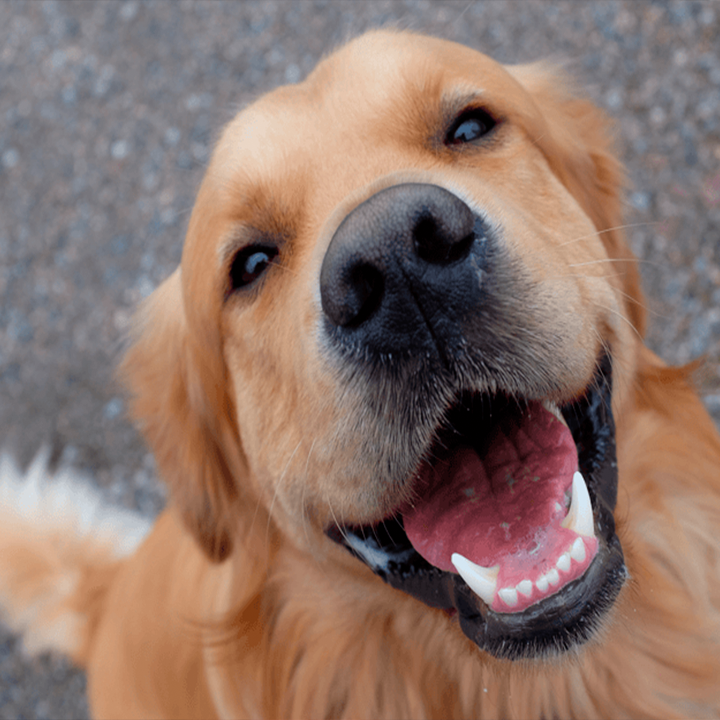
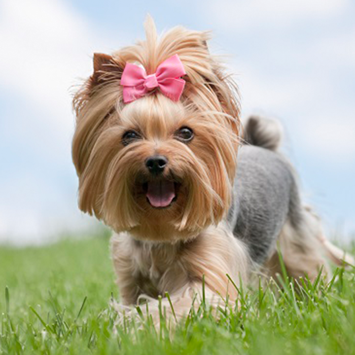
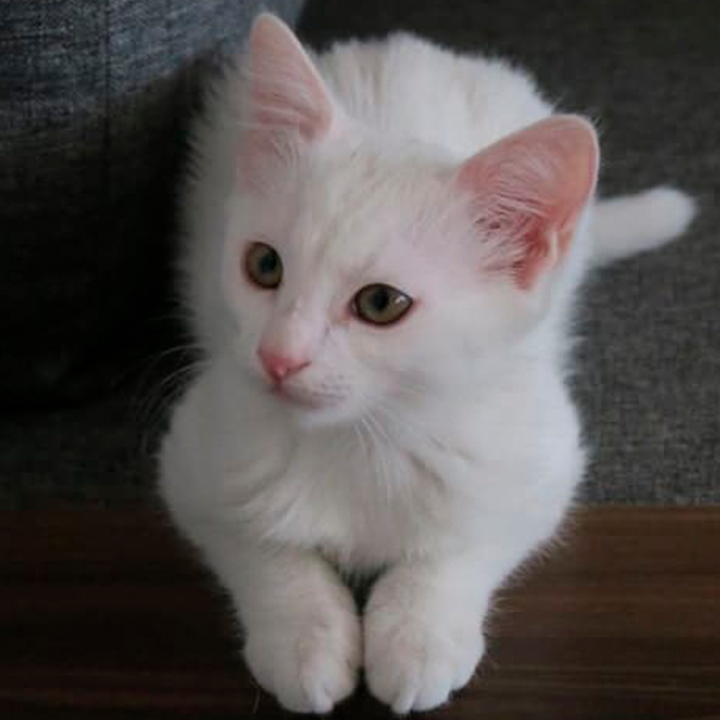
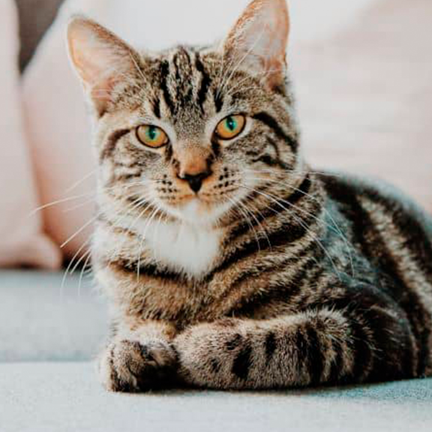
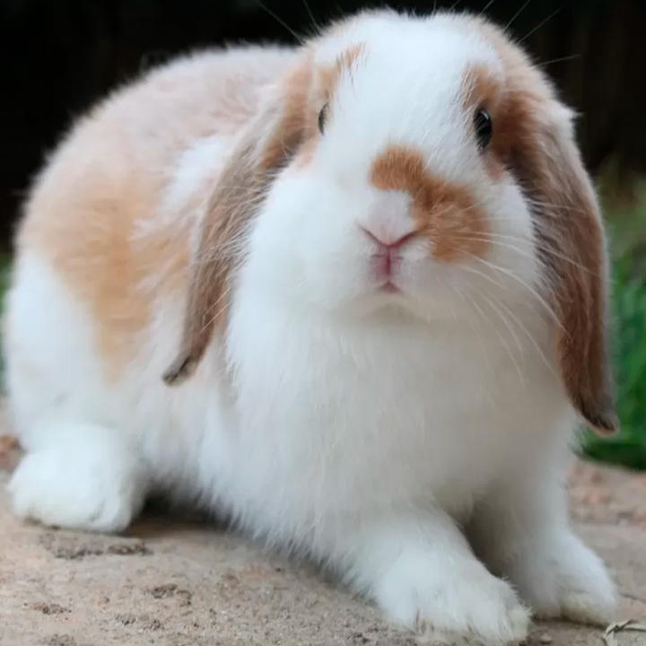
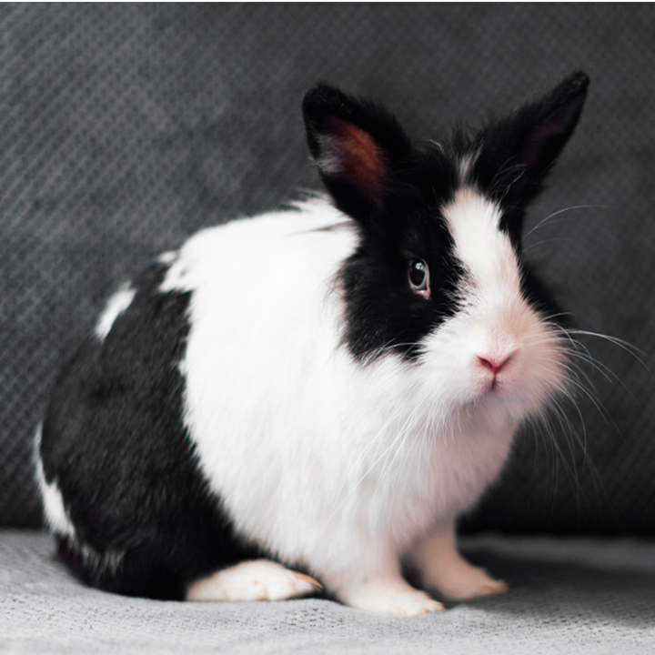

Encontre animais perto de você
Filtros
Idade
Tipos

Max
Cachorro, dócil e muito brincalhão. Ideal para famílias com crianças.
Tipo
Cachorro
Doador
Maria
Idade
3 Anos

Luna
Cachorra, tranquila e carinhosa. Perfeita para quem mora sozinho e busca companhia.
Tipo
Cachorro
Doador
Roberto
Idade
2 Anos

Mel
Gata, carinhosa e amorosa, para aqueles que deseja um animal apegado.
Tipo
Gato
Doador
Fernanda
Idade
1 Ano

Théo
Gato, amigavel e efetuoso precisa de um dono para suas brincadeiras.
Tipo
Gato
Doador
Jéssica
Idade
3 Anos

Cookie
Coelho, com pelagem branca e macia. Calmo e adora carinho, ideal para famílias.
Tipo
Coelho
Doador
Ana Maria
Idade
1 Ano

Bunny
Coelho, muito carinhoso e brincalhão. Adora cenouras e abraços. Precisa de um lar aconchegante.
Tipo
Coelho
Doador
Pedro
Idade